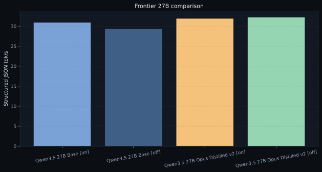

Azimuth Compare
Azimuth Report · pairwise diffs over the current data
Latest
Leaderboard
Compare
Chart
Frontier 27B comparison

Pairs
Current comparison set
thinking_on
JSON tok/s delta:
1.0
Sustained tok/s delta:
0.4
First answer ms delta:
83.5
thinking_off
JSON tok/s delta:
2.9
Sustained tok/s delta:
0.9
First answer ms delta:
4367.9